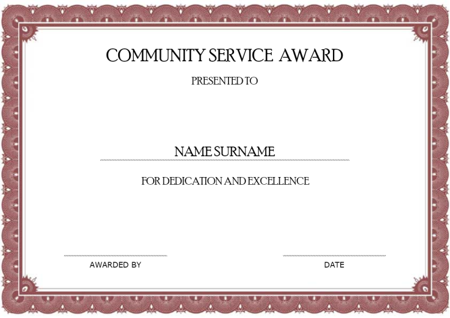

O technike kvantovej regresie
Metoda Kvantové regrese používá i procházení situacemi v minulých životech. Dostane se vám odpovědí na jakékoli situace ve vašem životě. Toho je dosaženo při spojení s vaším Vyšším Vědomím. Vyšší Vědomí jsou světelné bytosti z jiných dimenzí, vaši duchovní průvodci, které jsou s vámi a pomáhají vám.
Při sezení vám vaše Vyšší Vědomí vybere minulý život nebo minulé životy, aby vám ukázalo souvislosti s vaším současným životem. To vám pomůže pochopit konflikty, problémy, těžkosti, výzvy a nepříjemnosti v tomto životě. Také vám odpoví na vaše otázky, pomůže vám poučit se a posunout se vpřed. Po prozkoumání minulých životů budu mluvit s vaším Vyšším Vědomím přímo, přes vás. Oni použijí vaši řeč a vaše vyjadřovací schopnosti aby mohli se mnou mluvit. To je ta chvíle kdy dostanete odpovědi na vaše otázky. Vyšší Vědomí o vás ví vše. Zná vás lépe než vy sami sebe. Ví co je pro vás a pro váš život to nevhodnější. Vyšší Vědomí je velmi milující, milosrdné a má na srdci pouze váš nejlepší zájem. Vyšší Vědomí ví a rozumí tomu, co je nejlepší pro vaší duši i tělo, oproti našemu vědomí, které se snaží dávat všemu smysl, vše analyzovat a uspořádávat tak aby to vyhovovalo naším omezením.
Já vám budu pomáhat projít procesem poznání. Mým zájmem a povinností je provést vás tímto procesem tak, aby se vám dostalo odpovídající řešení vašich problémů.
Nezapomeňte na to, že aby se váš život obrátil k lepšímu, je podmíněno i vaším upřímným úsilím o změnu. Nehledejte příčiny jen kolem vás ale hlavně ve vás. Nikdo jiný změny za vás neudělá. Ani pomocníci z vesmíru. Pokud tomuto principu nerozumíte nebo nechcete rozumět, nejste ještě připraveni na změnu sebe sama.
Při sezení vám vaše Vyšší Vědomí vybere minulý život nebo minulé životy, aby vám ukázalo souvislosti s vaším současným životem. To vám pomůže pochopit konflikty, problémy, těžkosti, výzvy a nepříjemnosti v tomto životě. Také vám odpoví na vaše otázky, pomůže vám poučit se a posunout se vpřed. Po prozkoumání minulých životů budu mluvit s vaším Vyšším Vědomím přímo, přes vás. Oni použijí vaši řeč a vaše vyjadřovací schopnosti aby mohli se mnou mluvit. To je ta chvíle kdy dostanete odpovědi na vaše otázky. Vyšší Vědomí o vás ví vše. Zná vás lépe než vy sami sebe. Ví co je pro vás a pro váš život to nevhodnější. Vyšší Vědomí je velmi milující, milosrdné a má na srdci pouze váš nejlepší zájem. Vyšší Vědomí ví a rozumí tomu, co je nejlepší pro vaší duši i tělo, oproti našemu vědomí, které se snaží dávat všemu smysl, vše analyzovat a uspořádávat tak aby to vyhovovalo naším omezením.
Já vám budu pomáhat projít procesem poznání. Mým zájmem a povinností je provést vás tímto procesem tak, aby se vám dostalo odpovídající řešení vašich problémů.
Nezapomeňte na to, že aby se váš život obrátil k lepšímu, je podmíněno i vaším upřímným úsilím o změnu. Nehledejte příčiny jen kolem vás ale hlavně ve vás. Nikdo jiný změny za vás neudělá. Ani pomocníci z vesmíru. Pokud tomuto principu nerozumíte nebo nechcete rozumět, nejste ještě připraveni na změnu sebe sama.
Moje certifikáty
